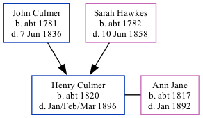

Henry Culmer c1820 - 1896
[ Home ] | [ Calendar ] | [ Surnames Index ] | [ Family History ]The child of John Culmer (a parish clerk) and Sarah Hawkes, Henry Culmer, the four times great-uncle of Nigel Horne, was born in Stourmouth, Kent, England c. 18201,2,3,4,5 and baptized there on Dec 17, 1820. He was married to Ann Jane.
Henry spent all of his life in Kent, England. Throughout his life, he lived at his birthplace in 18511 (the same place as his mother had been living in 1841), in 18612, in 18713, in 18814 and in 18915.
He died in Jan/feb/mar 1896 in Eastry, Kent, England.
Parents
- John was born c. 1781
- Sarah Anne was born c. 1782
Citations
- 1851 England Census Online publication - Provo, UT, USA: The Generations Network, Inc., 2005.Original data - Census Returns of England and Wales, 1851. Kew, Surrey, England: The National Archives of the UK (TNA): Public Record Office (PRO), 1851. Data imaged from the National
- 1861 England Census Online publication - Provo, UT, USA: The Generations Network, Inc., 2005.Original data - Census Returns of England and Wales, 1861. Kew, Surrey, England: The National Archives of the UK (TNA): Public Record Office (PRO), 1861. Data imaged from the National
- 1871 England Census Online publication - Provo, UT, USA: The Generations Network, Inc., 2004.Original data - Census Returns of England and Wales, 1871. Kew, Surrey, England: The National Archives of the UK (TNA): Public Record Office (PRO), 1871. Data imaged from the National
- 1881 England Census Online publication - Provo, UT, USA: The Generations Network, Inc., 2004. 1881 British Isles Census Index provided by The Church of Jesus Christ of Latter-day Saints © Copyright 1999 Intellectual Reserve, Inc. All rights reserved. All use is subject to the
- 1891 England Census Online publication - Provo, UT, USA: The Generations Network, Inc., 2005.Original data - Census Returns of England and Wales, 1891. Kew, Surrey, England: The National Archives of the UK (TNA): Public Record Office (PRO), 1891. Data imaged from The National
Family Tree
Generated by Ged2Site. Last updated on Jul 20, 2025